Software#
Index#
This is the web page accessed by accessing the device via a web-browser. This section will show the general device information.

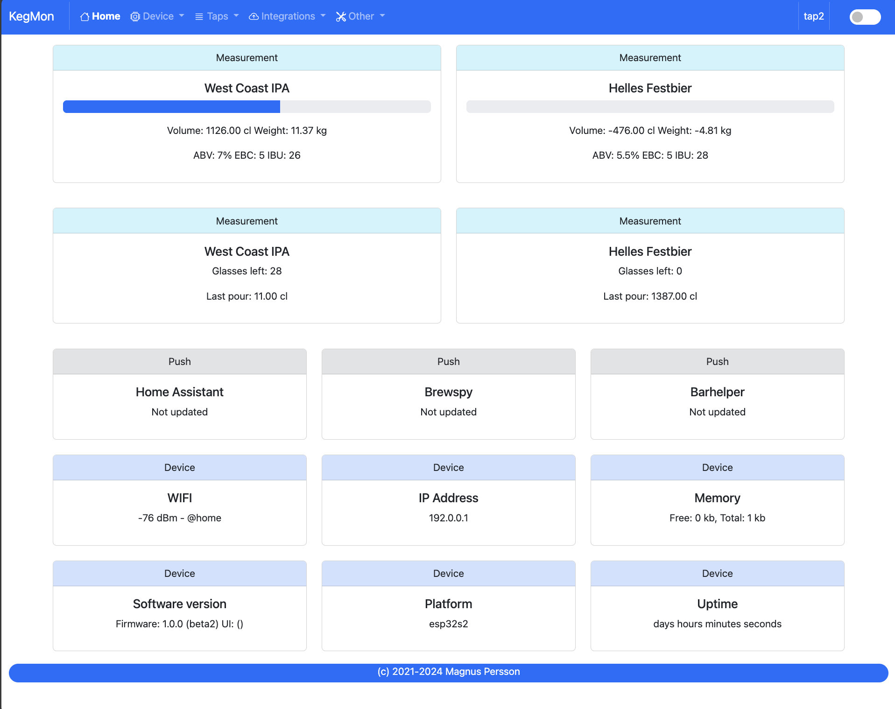
Shows information about the device and temperatures, only data available will be shown.
Device - Settings#

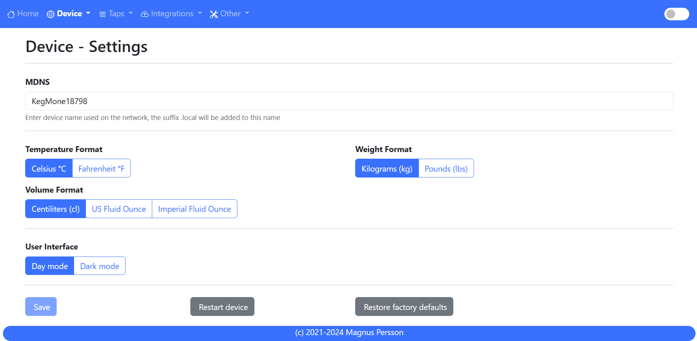
Device name: Set the name of the device on the network, your network needs to support mDNS.
Temperature format: Select format for temperatures
Weight unit: Select format for weights
Volume unit: Select format for volumes
Dark Mode: Switches the UI between light and dark mode. You can also use the toggle on the menubar for that.
Device - Hardware#

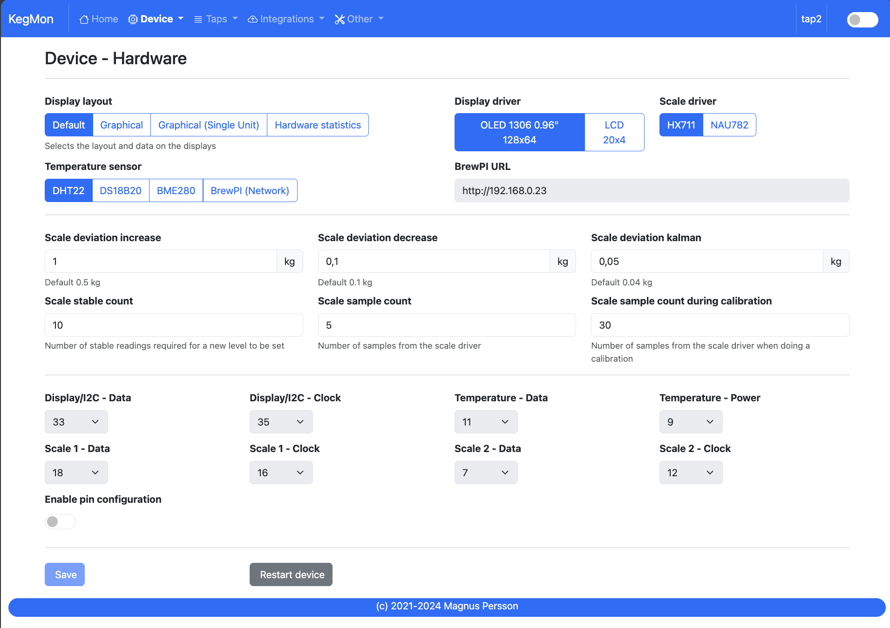
Display layout: Choose the layout/information on the displays.
Display driver: Choose the what display driver is used, either LCD 20x4 or OLED 0.96”. Default is OLED 0.96”.
Temp sensor: Choose the what temp sensor is used, either DHT22, BME280, DS18B20 or remote BrewPI-ESP installation. Default is DS18B20. Wiring for BME280 is different.
Scale sensor: Choose the what ADC is used, HX711 or NAU7802. Default is HX711. Wiring for NAU7802 is different.
BrewPI ESP URL: Base URL for the brewpi-esp to fetch temperature from. Require v15 or later.
Pins: If you dont follow the standard hardware wiring then you can customize the pins here.
The scale deviation, Kalman alignment, and stable-reading count settings also affect how quickly a level change or pour is accepted. Tune them against the stability page with the finished scale and keg in place; noisy readings can delay detection or make the reported level less steady.
Device - Calibration#

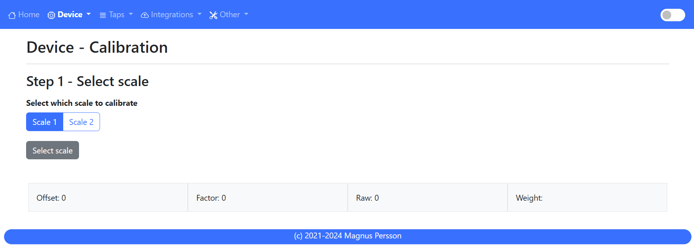
STEP 1 - Tare scale
The first step is to tare the scale. First select the scale from the dropdown list that you want to operate on. Make sure the scale is empty.
STEP 2 - Calculate factor
The second step is to calculate the factor used to calculate the weight. Place a thing with a known weight on the scale and enter the weight of that object. The software will then calculate the factor for estimating the weight.
STEP 3 - Validate
The third step is to validate that everything works, place anohter thing with a know weight and check the measured value. If you are satisfied then you are done.
Device - Stability#

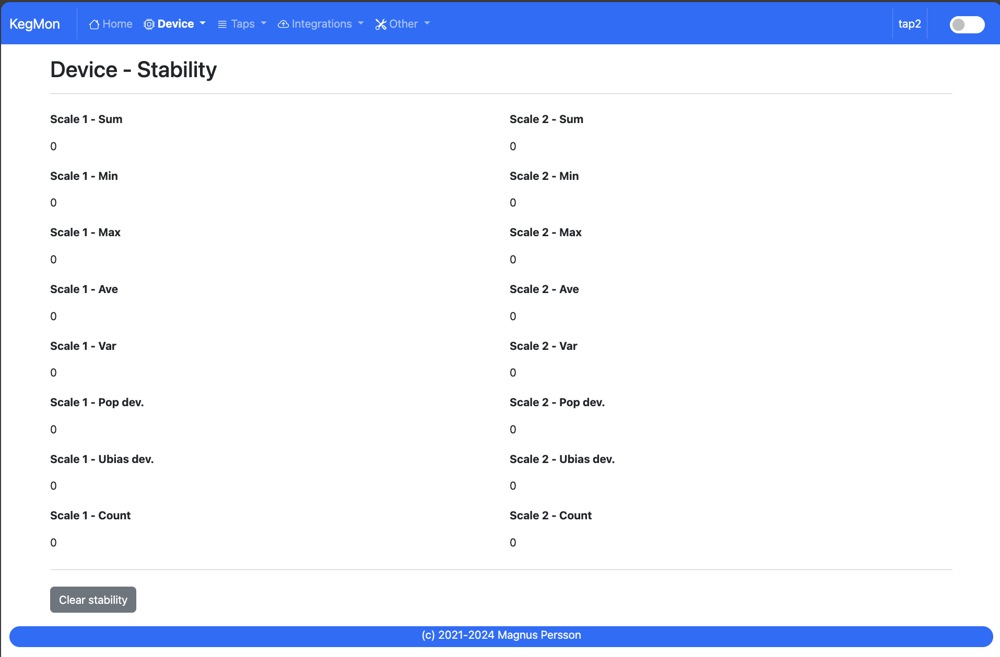
Information page that can determine the stability of your hardware build.
I have found that some of my hardware builds was not really stable so I added this feature to check the scale build before doing the final assembly.
If you keep the browser open you can also see the history of the values (raw, kalman & stable). This can help to show how your scale varies over time. Data is only stored in the browser so any refresh or page change will delete the graphs.
Device - Wifi#

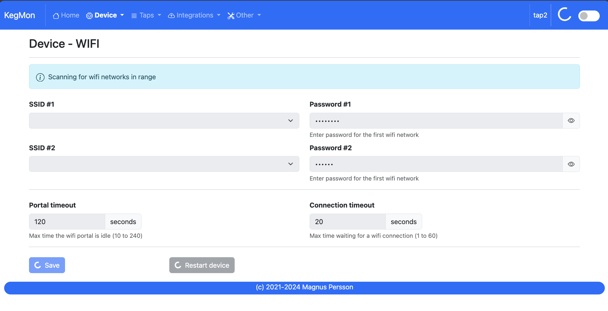
SSID #1:
Select the desired primary SSID to use.
Password #1:
Enter the primary password.
SSID #2:
Select the desired secondary SSID to use (optional).
Password #2:
Enter the secondary password (optional).
Portal timeout:
If the wifi portal is triggered (can be triggered by tapping the reset button 2-3 times within 3 seconds) then this is the amount of time allowed before it exists again.
Connect timeout:
This is the amount of time allowed for a wifi connect.
Taps - Settings#

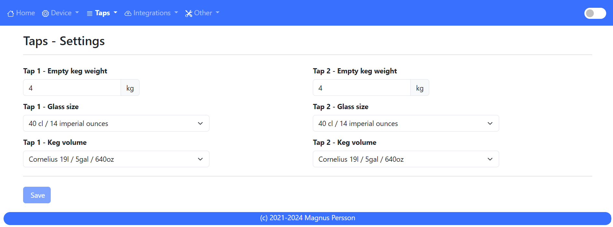
Empty keg weight: Weight of the empty keg, used to determine how much beer is in the keg.
Glass volume: Choose the volume of the beer glasses, used to determine how many pours are left.
Beer name, Beer ABV, Beer EBC, Beer IBU: Information about the beer, used to show on user interfaces.
Beer FG: Used in formula for calculating the beer volume. FG has a slight impact on the weight / volume unit. If not defined 1 will be used for calculations.
The device has two physical scale/tap channels. A keg token or service slot does not add another physical scale input.
Taps - Beers#

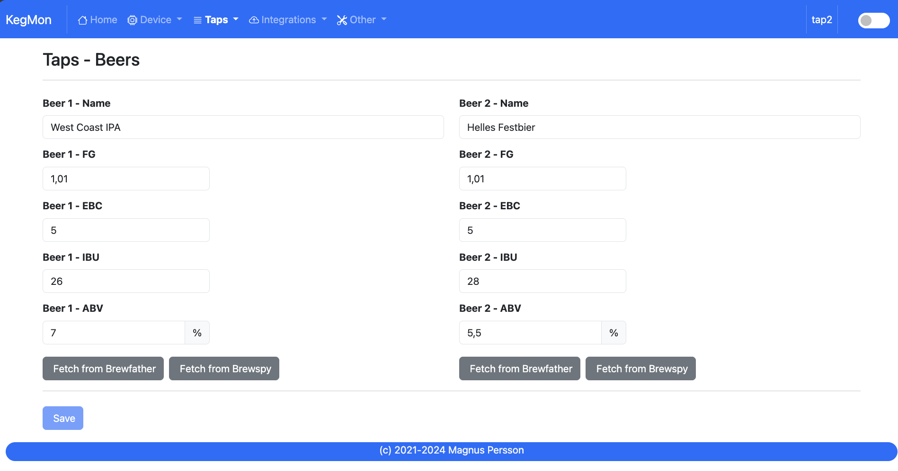
Shows information about beers on tap. Use the buttons to import from brewspy or brewfather.
Taps - History#

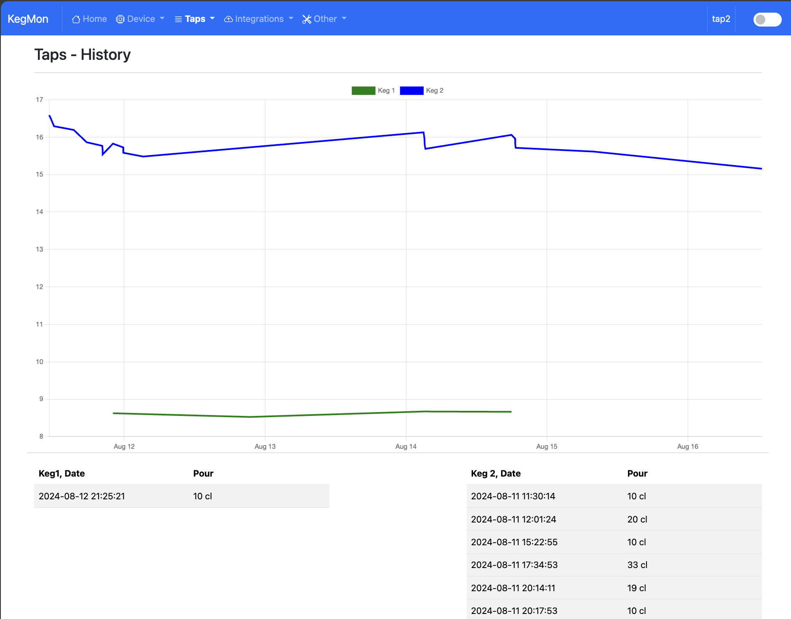
Shows information about the latest pours per tapbeers on tap.
Integration - Home Assistant#

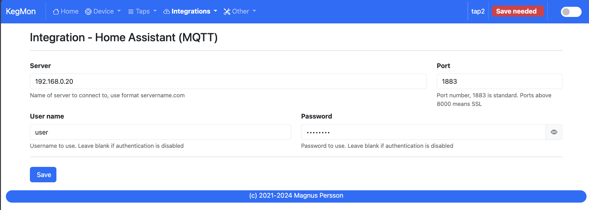
Setting for MQTT server that is used by Home Assistant.
Integration - Brewfather#

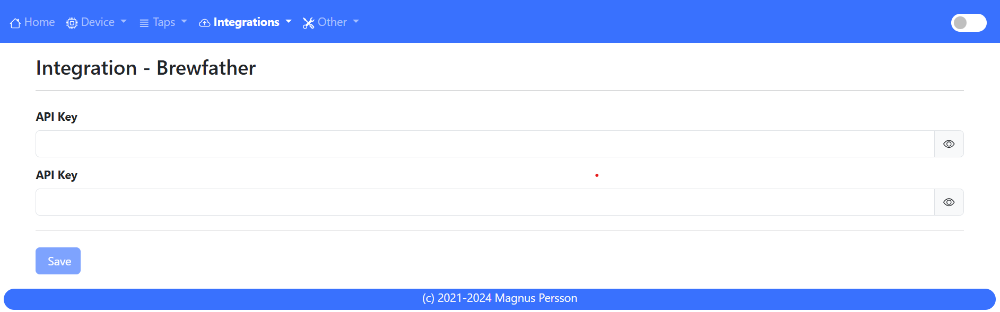
API and User keys for access to brewfather
Integration - Brewspy#

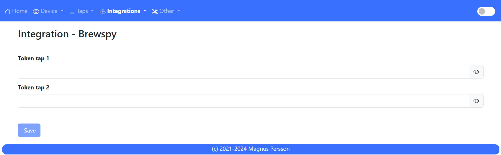
Brewspy tokens for keg 1 & keg 2.
Click on the taplist and the tap you want to connect. Under webhook URL copy the last code and enter that into kegmon.
Note
This will not work on ESP8266 due to lack of RAM for using SSL connections.
Integration - Barhelper#

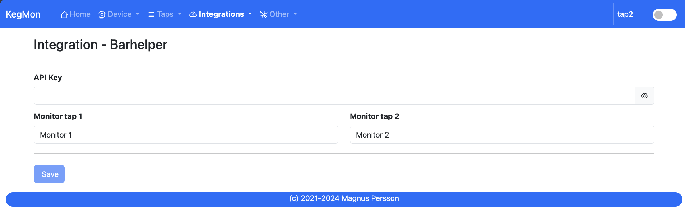
Barhelper API keys and name of monitors.
You can get the API key from the settings part of Barhelper and enter this into kegmon. Make a copy of it since you will not be able to retrieve it again.
The name of the monitors does not need to be registered, they will be added after the first run. Just connect the tap/keg to the monitor and the level will be the same as in kegmon.
Note
On ESP8266 the device will use a NON-SSL endpoint to send the data since there is not enough memory.
Integration - Influx#

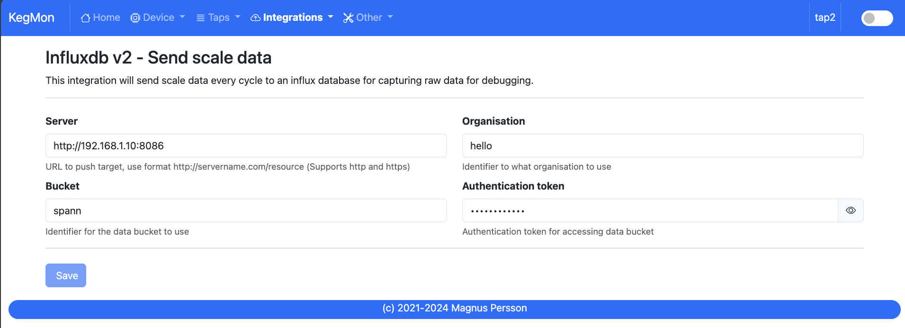
Sends scale and internal parameters to an influx db v2 for debugging and detailed analysis.
Enter the server URL, organization, bucket, and write token. This integration is intended for scale and diagnostic data collection; it is separate from the tap-level and pour integrations.
Integration - BrewLogger#
Open Integrations → BrewLogger and enter the base URL of the BrewLogger service. KegMon sends stable keg-level updates and pour events to BrewLogger. The service URL is saved without trailing slashes.
Integration - BrewGraph#
Open Integrations → BrewGraph and enter the base URL and token for each configured keg. KegMon uses the corresponding token when sending stable volume and pour updates, and when fetching beer details from the Taps → Beers page. The URL is saved without trailing slashes.
KegMon supports two physical scale/tap channels (Keg 1 and Keg 2), so the UI provides one token field for each supported keg.
Serial console#

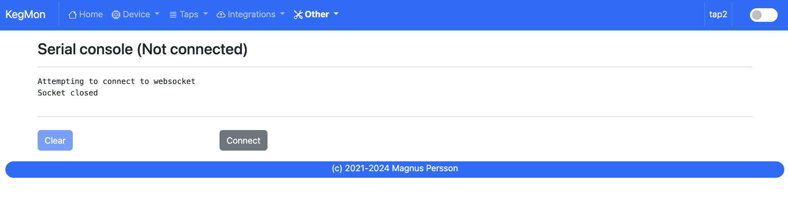
Here you can view the serial output from the device for troubleshooting
Backup & Recovery#

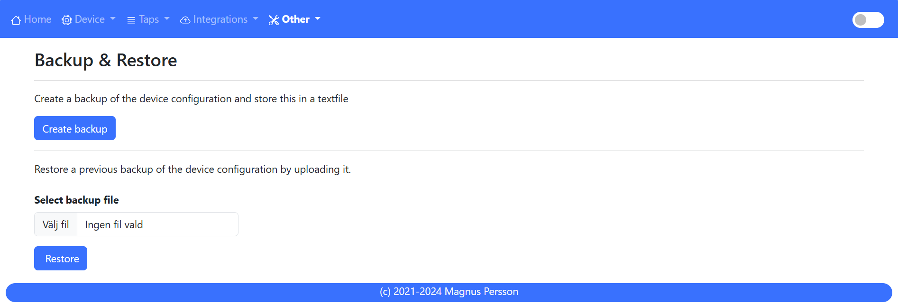
Backup your configuration or restore it from a previous state
Firmware update#

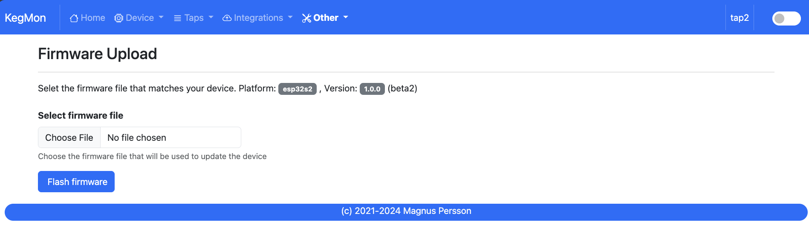
Here you can upload a new firmware version without the need to hook the device to a serial port on your computer.
Support#

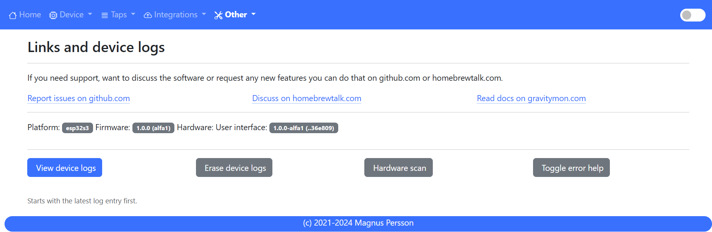
View logs or check the hardware configuration
Tools#

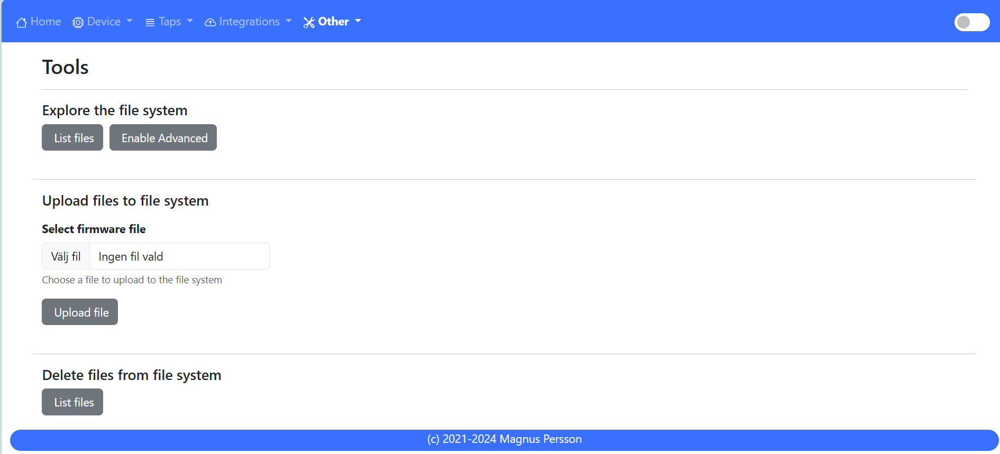
Interact with the file system on the device